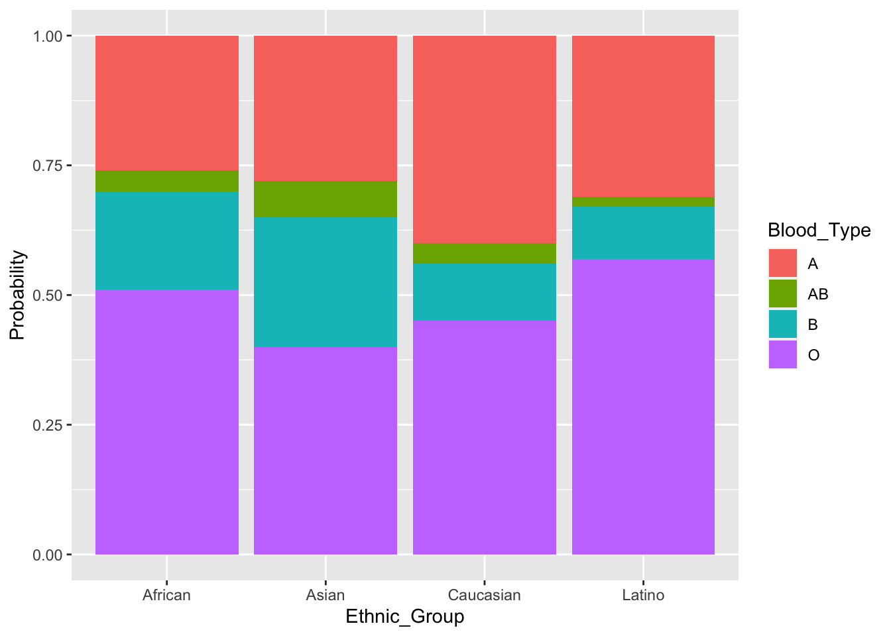
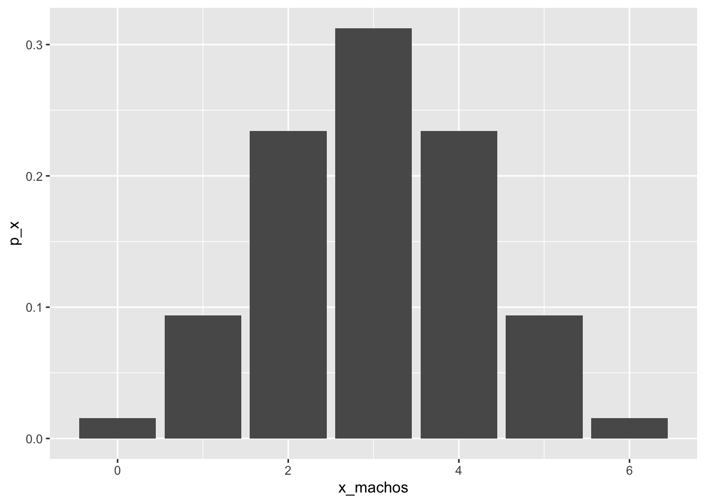
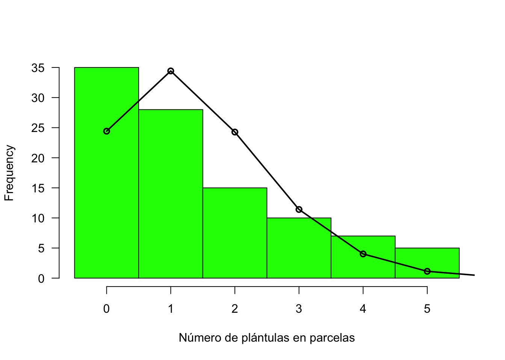

Probabilidades y Distribuciones Discretas
1.5.Probabilidades y Distribuciones Discretas
Todo lo biológico es incierto, pero podemos conocer algo de esa incertidumbre mediante el estudio de las probabilidades.
1.5.1.Probabilidades
Objetivo
Conocer las reglas básicas de las probabilidades
Probabilidad es la medida de la oportunidad de que ocurra un evento, y puede variar entre 0 y 1. Cuando la probabilidad es 0, el evento no es posible. Cuando la probabilidad es 1, el evento es totalmente posible. En el campo de la biología, las probabilidades varían entre esos dos extremos teóricos.
Probabilidad clásica y empírica
Hay dos maneras básicas de determinar la probabilidad de que ocurra un evento.
La probabilidad clásica, se basa en consideraciones teóricas. Por ejemplo, un dado tiene seis caras (es un cubo), cada una con un número de puntos del 1 al 6; por lo tanto, la probabilidad de que ocurre un evento en particular, digamos que salgan en la parte superior 3 puntos, se puede calcular sin lanzar el dado, simplemente calculando la proporción: ocurrencias del evento esperado (3 puntos) dividido entre el número de eventos posibles (seis): \[p = \frac{1}{6} \approx 0.1667\] Otros ejemplos son las fichas de dominó, las caras de una moneda, las cartas de un juego de baraja.
Ejercicio
Calcule la probabilidad de tomar una ficha específica de dominó.
Otra manera de determinar la probabilidad de un evento, está basada en la frecuencia relativa del evento en la población (o la muestra, generalmente) de interés. A esta frecuencia relativa (o proporción del evento) se la conoce como probabilidad empírica. Por ejemplo, la probabilidad de ocurrencia en una problación de alguna condición genética, se determina de manera empírica según las evaluaciones médicas, como el número de casos (eventos) por nacimientos, aunque no conozcamos el mecanismo u origen de la condición.
Ejercicio
¿Cuál es la probabilidad de ocurrencia de gemelos en la población de Puerto Rico?
La ‘Regla de la División’
Los cálculos de probabilidades en los ejemplos anteriores, siguen la denominada Regla de la División: la probabilidad de un evento (p) es el número de veces en las que el evento puede ocurrir (s) dividido por el número total de eventos posibles (n), asumiendo que todos los eventos individuales son igualmente probables.
\[p = \frac{s}{n}\]
La Ley de la Probabilidad Total
En algunos casos es difícil calcular la probabilidad de un evento en particular, no así las probabilidades de los otros eventos que no son el que nos interesa. En este caso se puede aplicar la ley de la probabilidad total que establece que la suma de las probabilidades de todos los eventos posibles es igual a 1. Por lo tanto si conocemos las probabilidades de todos los eventos que no son el que nos interesa, podemos aplicar la regla de substracción:
\[p = 1 - q\]
dónde (p) es la probabilidad del evento que nos interesa, y (q) la probabilidad de todos los otros eventos posibles.
Distribución de probabilidades
Una manera práctica de presentar las probabilidades de varios eventos, en grupos o poblaciones diversas, es mediante una lista de las probabilidades en forma de tabla o gráfica.
Ejemplo
library(readxl)
library(kableExtra)
# datos ABO grupos étnicos
abo <- read_excel("data/ABOtypes-ethnic-groups.xlsx", sheet = "tabla")
# tabla
abo %>%
kbl(caption = "Tabla 1. Distribución de probabilidades (a partir de frecuencias) de los tipos de sangre ABO, en cuatro grupos étnicos de los Estados Unidos.") %>%
kable_classic(full_width = F, html_font =
"Cambria")| Blood Type | African | Asian | Caucasian | Latino |
|---|---|---|---|---|
| O | 0.51 | 0.40 | 0.45 | 0.57 |
| A | 0.26 | 0.28 | 0.40 | 0.31 |
| B | 0.19 | 0.25 | 0.11 | 0.10 |
| AB | 0.04 | 0.07 | 0.04 | 0.02 |
library(ggplot2)
# datos
abog <- read_excel("data/ABOtypes-ethnic-groups.xlsx", sheet = "barras")
# gráfica de barras por grupo étnico
ggplot(abog, aes(x=Ethnic_Group, y = Probability,
fill=Blood_Type)) +
geom_col(position="fill")
Figura 1 Distribución de probabilidades (a partir de frecuencias) de los tipos de sangre ABO, en cuatro grupos étnicos de los Estados Unidos.
1.5.2.Número de Posibilidades
Objetivos
Contabilizar todos los posibles resultados y eventos de un experimento o prueba
La definición de probabilidad requiere conocer el número total de eventos posibles, para poder calcular la misma. En esta sección trataremos algunas maneras de cómo podemos contar los posibles resultados de experimentos o pruebas.
Secuencia de repeticiones
Cuando es importante la secuencia en los resultados de repeticiones podemos aplicar una función de potencia para encontrar el número total de eventos posibles: \[eventos = (resultados\ posibles)^{número-repeticiones}\]
Al tirar un dado existen 6 resultados posibles, y los eventos diferentes que podemos observar son \(6^1 = 6\); si tiramos el dado dos veces podemos calcular el total de números diferentes de dos dígitos que se formarán: \(6^2 = 36\).
Ejemplo
¿Por qué son necesarios codones de tres nucleótidos para codificar un aminoácido?
Para la síntesis de proteínas a partir de un RNA mensajero, se necesitan RNAs de transferencia que posean codones específicos (secuencias de tres de los cuatro nucleótidos - U, C, A, G) para 20 aminoácidos.

Figura 1. Esquema de la síntesis de una proteína a partir de un mRNA y codones con sus respectivos aminoácidos. Hay también codones de inicio y parada de la síntesis. (tomada de Khan Academy, khanacademy.org)
Aplicando la fórmula de potencia podemos calcular cuantas secuencias (eventos) podemos producir tomando de 1 a n nucleótidos: \[4^1 = 4\]
\[4^2 = 16\]
\[4^3 = 64\]
\[4^4 = 256\]
Codones de dos nucleótidos no producen suficientes secuencias diferentes para los 20 aminoácidos, inicio y paradas. Codones de tres aminoácidos producen 64 diferentes secuencias, suficiente para los 20 aminoácidos, y le provee redundancia al sistema.
Ejercicio
¿Cuántos números (eventos) son posibles en la lotería de 5 números?
Permutaciones
En el caso de las secuencias, los elementos disponibles para cada repetición son ilimitados, ahora consideremos el caso cuando estos elementos son limitados, si ocurre uno, no vuelve a ocurrir. En este caso los resultados son permutaciones (P) de los n elementos, y se calculan: \[_nP_n = n!\]
Si no usamos todos los n elementos al mismo tiempo, sino un subconjunto de X elementos, entonces la fórmula es:
\[_nP_X = \frac{n!}{(n - X)!}\]
Ejemplo
Si tenemos las siguientes letras: m, x, y, z, p, t, l, k, calcular cuántos códigos de ocho letras podemos crear con ellas, sin que se repitan las letras; también vamos a calcular cuántos códigos de cuatro letras podemos crear:
# con n letras
n <- 8
Pn <- factorial(n)
# con X letras
X <- 4
PX <- factorial(n) / factorial(n - X)
# resultados
sprintf("%s = %i", "códigos de 8 letras", Pn)## [1] "códigos de 8 letras = 40320"sprintf("%s = %i", "códigos de 4 letras", PX)## [1] "códigos de 4 letras = 1680"Combinaciones
Podemos contar los posibles resultados en cuanto a grupos de objetos tomados todos o parcialmente, sin que nos importe la secuencia en que ocurran en cada grupo, y en este caso estamos contando combinaciones:
\[_nC_X = \frac{n!}{X!(n - X)!}\]
Usaremos el ejemplo anterior para contar el número de combinaciones de ocho y cuatro letras:
# con n letras
n <- 8 # X = n
Cn <- factorial(n)/(factorial(n) * factorial(n - n))
# con X letras
X <- 4
CX <- factorial(n) /(factorial(X) * factorial(n - X))
# resultados
sprintf("%s = %i", "códigos de 8 letras", Cn)## [1] "códigos de 8 letras = 1"sprintf("%s = %i", "códigos de 4 letras", CX)## [1] "códigos de 4 letras = 70"
1.5.3.Independencia y Probabilidad Condicional
Objetivos
Distinguir las probabilidades de eventos independientes y eventos no independientes
Probabilidad de eventos independientes
Dos eventos son independientes cuando la ocurrencia de uno, no afecta la ocurrencia del otro. El ejemplo clásico es el lanzamiento varias veces de una modeda, en cada lanzamiento la probabilidad de obtener cara o cruz es la misma: 1/2 (0.5). Ahora bien, si para cada lanzamiento esperamos un evento en particular, digamos que el primer lanzamiento sea cara y el segundo sea cara también, en este caso se aplica la Regla de la Multiplicación, es decir, esperamos que el evento A ocurra con un resultado y que el evento B ocurra también con un resultado esperado:
\[p(A\ y\ B) = p(A)\ *\ p(B)\]
Ejemplo
Una aplicación de esta regla en la biología, la encontramos cuando calculamos la probabilidad de un tipo particular de genotipo. Por ejemplo, si queremos calcular la probabilidad de un genotipo recesivo, a partir de padres heterocigotos, asumiendo igual segregación de los alelos, la probabilidad del genotipo recesivo será: 1/2 x 1/2 = 1/4 (0.25).
Probabilidad condicional
Si dos eventos no son independientes, la probabilidad conjunta es una condicional, donde la probabilidad del segundo evento, está ligada a la probabilidad de la ocurrencia del primero. En este caso se aplica la Regla General de la Multiplicación:
\[p(A\ y\ B) = p(A)\ *\ p(B|A)\]
que se lee: la probabilidad de la ocurrencia secuencial de los eventos A y B, es la probabilidad del evento A, multiplicada por la probabilidad del evento B cuando ocurre el evento A.
Ejemplo
En una universidad hay 12242 estudiantes, de las cuales 6027 se identifican como mujeres; la universidad tiene 5000 estudiantes graduados, de las cuales 2213 se identifican como mujeres. ¿Cuál es la probabilidad de seleccionar de la lista de estudiantes a una estudiante, y que además sea estudiante graduada?
Aplicando la regla general de la multiplicación:
\[P(M\ y\ G) = P(M)\ *\ P(G|M)\]
6027/12242 = 0.49 y 2213/5000 = 0.44
\[P(M\ y\ G) = 0.49*0.44 = 0.22\]
1.5.4.Eventos Mutualmente Exclusivos
Objetivos
Calcular probabilidades de eventos mutuamente exclusivos total o parcialmente
En algunas situaciones deseamos conocer la probabilidad de que ocurran al menos dos o más eventos específicos excluyentes en una prueba; es decir ¿cuál es la probabilidad de que ocurra el evento A o el B (no ambos) en una prueba. En este caso se aplica la Regla de Adición Simple:
\[P(A\ o\ B) = P(A) + P(B)\]
Ejemplo
¿Cuál es la probabilidad de que un dado muestre un 3 o un 1 en una tirada? P(3) = 1/6 y P(1) = 1/6, por lo tanto la probabilidad P(3 o 1) = 1/6 + 1/6 = 1/3.
Exclusión incompleta
En el campo de la biología es frecuente la ocurrencia de eventos de forma exclusiva en algunos casos, pero en otros de manera concurrente. En estos casos, la probabilidad de ocurrencia de un evento u otro, tomando en cuenta la concurrencia se calcula con la Regla General de la Adición:
\[P(A\ o\ B) = P(A) + P(B) - P(A\ y\ B)\]
podemos que cuando hay exclusión mutua completa, P(A y B) será igual a 0.
Ejemplo
Ciertas condiciones de salud pueden estar presentes de manera excluyente (si ocurre una no ocurre la otra), o pueden ocurrir ambas simultáneamente. Un ejemplo es la alta presión sanguínea y altos niveles de colesterol en la sangre. Una forma de representar las probabilidades de estos eventos, es mediante lo que se conoce como diagramas de Venn.

Figura 2. Diagrama de Venn de los conjuntos de probabilidades de los eventos alta presión sanguínea, altos niveles de colesterol en la sangre, y la probabilidad concurrente de ambas condiciones.
1.5.5.Distribución Binomial y de Poisson
Objetivos
Identificar las distribuciones adecuadas a datos discretos
La Distribución Binomial
Para muchos eventos o casos existen solo dos categorías mutuamente exclusivas, o aún cuando existan más de dos, se pueden separar en la categoría de interés y las otras en una sola categoría.
Ejemplo
- Tirar una moneda varias veces solo tiene dos categorías de resultados.
- Tirar los dados, aunque tiene seis posibles resultados, se pueden dividir en dos categorías: el número del 1 al 6 que me interesa, y los demás (p. ej.: 3 versus 1, 2, 4, 5 y 6).
Una distribución binomial de probabilidades describe las probabilidades de resultados para eventos, que presenten las siguientes propiedades:
- El evento (p. ej: tirar los dados) ocurre una cantidad específica de veces (k).
- Cada vez que el evento ocurre, hay dos posibles resultados mutuamente excluyentes. Uno de los resultados se considera “éxito” (success) y su probabilidad se denota como p, y al otro se le denomina “falla” (failure) y se denota como q. Como solo hay dos posibles resultados, entonces: \(p + q = 1\).
- Los eventos son independientes (revisar definición).
- El número de veces en los k eventos que ocurre el resultado esperado, se denomina x; la probabilidad de ocurrencia de x se representa como p(x).
Ecuación Binomial
La probabilidad de ocurrencia p(x) de un resultado de un evento en particular x, en k ocurrencias del evento, está dada por la ecuación de la distribución binomial:
\[p(x) = \frac{k!}{x!(k - x)!} p^{x} q^{(k - x)}\]
Ejemplo
(Example 5.7 - Havel et al. 2019) La fibrosis cística (FC) es un desorden hereditario, caracterizado por acumulación de mucosidad en los pulmones. El gen que la determina es uno autosómico recesivo, por lo tanto si dos portadores heterocigotos tienen hijos, el riesgo de producir un bebé homocigoto con FC es 0.25 (25%). ¿Cuál será la probabilidad de que en una pareja portadora con tres hijo/as haya uno o más afectado por FC?
Podemos usar la fórmula de la distribución binomial, y obtener las probabilidades de cada evento de interés:
Para x = 0, con k = 3 (tres hijos, tres pruebas): \[p(0) = \frac{3!}{0!(3 - 0)!} 0.25^{0} 0.75^{(3 - 0)} = 0.75^3 = 0.42188\]
Podemos calcular las probabilidades para x = 1, 2, 3, usando el siguiente código:
# un hijo con FC
p_uno <- dbinom(1, size=3, prob=0.25)
sprintf("probabilidad de un hijo con FC = %.5f", p_uno)## [1] "probabilidad de un hijo con FC = 0.42188"# dos hijos con FC
p_dos <- dbinom(2, size=3, prob=0.25)
sprintf("probabilidad de dos hijos con FC = %.5f", p_dos)## [1] "probabilidad de dos hijos con FC = 0.14062"# tres hijos con FC
p_tres <- dbinom(3, size=3, prob=0.25)
sprintf("probabilidad de tres hijos con FC = %.5f", p_tres)## [1] "probabilidad de tres hijos con FC = 0.01563"Como lo que pide el problema es la probabilidad de uno o más hijos con FC, podemos aplicar la regla de la adición (p(1 o 2 o 3)) ya que se trata de eventos mutuamente excluyentes, y sumar las probabilidades anteriores para uno, dos y tres hijos con FC.
También podemos usar el siguiente código para probabilidades acumuladas de mayor o igual a un hijo con FC, usando la regla de la substracción:
# probabilidad acumulada de 1 o más hijos con FC
pacum1plus <- 1 - dbinom(0, size = 3, prob = 0.25)
sprintf("probabilidad de uno o más hijos con FC = %.5f", pacum1plus)## [1] "probabilidad de uno o más hijos con FC = 0.57812"Frecuencias Esperadas
Es común en la investigación en biología, comparar los resultados de múltiples ensayos con las frecuencias esperadas de los eventos posibles en cada ensayo.
Ejemplo
(Example 5.8 Havel et al. 2019) Una especie de cerdo silvestre africano, produce con mucha frecuencia un tamaño de camada de 6 cerditos. Asumimos que la probabilidad de cada cerdito de ser macho o hembra es p = 0.5, y por tratarse de camadas de 6 cerditos, k = 6.
library(kableExtra)
# probabilidades de que ocurran 0 a 6 cerditos machos en una camada
cero <- dbinom(0, size = 6, prob = 0.5)
uno <- dbinom(1, size = 6, prob = 0.5)
dos <- dbinom(2, size = 6, prob = 0.5)
tres <- dbinom(3, size = 6, prob = 0.5)
cuatro <- dbinom(4, size = 6, prob = 0.5)
cinco <- dbinom(5, size = 6, prob = 0.5)
seis <- dbinom(6, size = 6, prob = 0.5)
x_machos <- c(0, 1, 2, 3, 4, 5, 6)
p_x <- c(cero, uno, dos, tres, cuatro, cinco, seis)
binomial <- data.frame(x_machos, p_x)
# producir tabla
binomial %>%
kbl(caption = "Tabla 2. Probabilidad binomial de un número x de cerditos machos en camadas de 6 cerditos.") %>%
kable_classic(full_width = F, html_font =
"Cambria")| x_machos | p_x |
|---|---|
| 0 | 0.015625 |
| 1 | 0.093750 |
| 2 | 0.234375 |
| 3 | 0.312500 |
| 4 | 0.234375 |
| 5 | 0.093750 |
| 6 | 0.015625 |
library(ggplot2)
# gráfica de columnas
graf_binom <- ggplot(x=x_machos, y=p_x, binomial) +
geom_col(aes(x = x_machos, y = p_x))
graf_binom Figura 3. Distribución binomial de probabilidades, para la ocurrencia de camadas de cerdo silvestre con cantidades de machos entre 0 y 6.
Asumimos que la probabilidad de los cerditos de ser macho o hembra es 0.5. En un sitio de cria de estos cerditos, examinaron el número de machos por camada de seis, y encontraron que de 100 camadas 20 tuvieron 5 o más machos. Queremos saber si esta cantidad se ajusta a la distribución binomial y es un resultado aleatorio o no.
Primero vamos a calcular las frecuencias esperadas, (\(E(x) = n*p(x)\)) a apartir de las probabilidades binomiales y el número de ensayos (camadas).
# frecuencia esperada
f_esp <- p_x * 100
frec_esp <- data.frame(x_machos, p_x, f_esp)
# tabla
frec_esp %>%
kbl(caption = "Tabla 3. Probabilidad binomial de un número x de cerditos machos en camadas de 6 cerditos y la frecuencia esperada en 100 camadas.") %>%
kable_classic(full_width = F, html_font =
"Cambria")| x_machos | p_x | f_esp |
|---|---|---|
| 0 | 0.015625 | 1.5625 |
| 1 | 0.093750 | 9.3750 |
| 2 | 0.234375 | 23.4375 |
| 3 | 0.312500 | 31.2500 |
| 4 | 0.234375 | 23.4375 |
| 5 | 0.093750 | 9.3750 |
| 6 | 0.015625 | 1.5625 |
En la tabla anterior observamos que la frecuencia de camadas (usando la regla de la adición de eventos excluyentes) con 5 o 6 cerditos en 100 casos (camadas) es aproximadamente 11. Obtener 20 camadas con 5 o 6 cerditos, parece no ajustarse a un proceso aleatorio, y es posible que algún factor no aleatorio determina el sexo en las camadas.
La Distribución de Poisson
Otra distribución de probabilidades de eventos discretos, muy utilizada en biología, es la distribución de Poisson. Una aplicación común de esta distribución de probabilidades, es en el estudio de eventos con frecuencia muy baja, y tratar de probar si su ocurrencia es independiente con respecto a otras. En teoría esta distribución no tiene un límite superior, pero su límite inferior es la no ocurrencia del evento.
Usualmente las frecuencias (o proporciones de un total) de las ocurrencias se miden en función del espacio (distancias) y en el tiempo.
Ecuación de la distribución de Poisson
La distribución de proporciones (frecuencias) o probabilidades de ocurrencia, de eventos independientes, sin límite teórico de ocurrencias, se puede definir con la siguiente ecuación:
\[p(x) = \frac{\mu^{x}e^{-\mu}}{x!}\] donde \(\mu\) es la media de la población de ocurrencias del evento por unidad de muestreo o caso, \(e\) es la base de los logaritmos naturales, y \(p(x)\) es la probabilidad de ocurrencia de \(x\) eventos en una unidad de muestreo o caso. Sin embargo, usualmente no conocemos la media de la población, y usamos la media de la muestra:
\[p(x) = \frac{\bar x^{x}e^{-\bar x}}{x!}\]
Alternativamente, podemos encontrar los valores de probabilidad p(x), utilizando una tabla de probabilidades de Poisson, cuyas filas son los valores de x y las columnas los valores de \(\bar x\), llamados también \(\lambda\).
Ejemplo
(Example 5.9 Havel et al. 2019) La distribución del número de plántulas de arce (maple) en 100 parcelas cuadradas de 1 \(m^2\), en teoría puede seguir una distribución de Poisson. La media de la muestra, llamada también lambda (\(\lambda\)) en la distribución de Poisson, es 1.41 plántulas de arce por parcela. La siguiente gráfica compara los valores teóricos con los reales.
# datos reales de arce
arce <- read.csv("data/Table 3.3.csv")
# función Poisson
# pois <- dpois(0:5, lambda = 1.41)
pois <- dpois(0:6, lambda = 1.41) * 100
# gráficas
hist(arce$Seedlings, right = FALSE, breaks = seq(0, 6, 1), las = 1, col = "green", xaxt = "n", main = "", xlab = "Número de plántulas en parcelas")
axis(1, at = seq(0.5, 5.5, 1), labels = seq(0,5,1))
lines(pois ~ c(0:6 + 0.5), lwd = 2)
points(pois ~ c(0:6 + 0.5), lwd = 2)
Figura 4 Distribución de frecuencias del número de plantas por parcela (barras), y la frecuencia esperada de la distribución de Poisson (puntos y línea), con \(\lambda = 1.41\).